Do-ems!
Collaborative play, from a 13-metre dome to a piece of string
I make games where the material is the space between people. Some need a dome, eight projectors and ninety-three speakers. Some need a piece of string. Most of them get made with other people rather than for them, and most of them end up documented as a zine so that somebody else can rebuild them. This page collects all of that.
- Do-ems, ten game-poems for the Satosphère
- The string game
- Games between people
- Made with communities
- Workshops
- Zines
Do-ems
Ten tiny playful collaborative experiments. Satosphère, Society for Arts and Technology, Montréal.
Ten tiny collaborative game-poems for the Satosphère, a 13-metre dome with 8 projectors and 93 speakers that holds 350 people. A camera mounted 13 metres up tracks where people are, so you play by moving your body. No controllers, and nothing to read before you start. Nobody can finish one of these alone.
=> Kali: Draw together on the dome, kaleidoscope style.
=> With Me: Eat dots to grow big and collide to regrow the world.
=> Stick Together: Stay within a moving sphere together.
=> Hug (Knus): Match faces to find connection.
=> Flock: Herd your little friends around.
=> Steer: Collectively steer the dome.
=> Share: Control a large sphere together, growing or shrinking.
=> Stars: Match the constellations.
The string game
The best game I ever made. The whole thing is written out below.
This is a piece of string.
It has two ends.
We each take one end.
We can either let go.
Or not.
That is the entire game. No screen, no account, no shared language. I have played it hundreds of times and never seen it played the same way twice. It costs nothing to make, and anyone can rebuild it from the five lines above, which is most of the point.
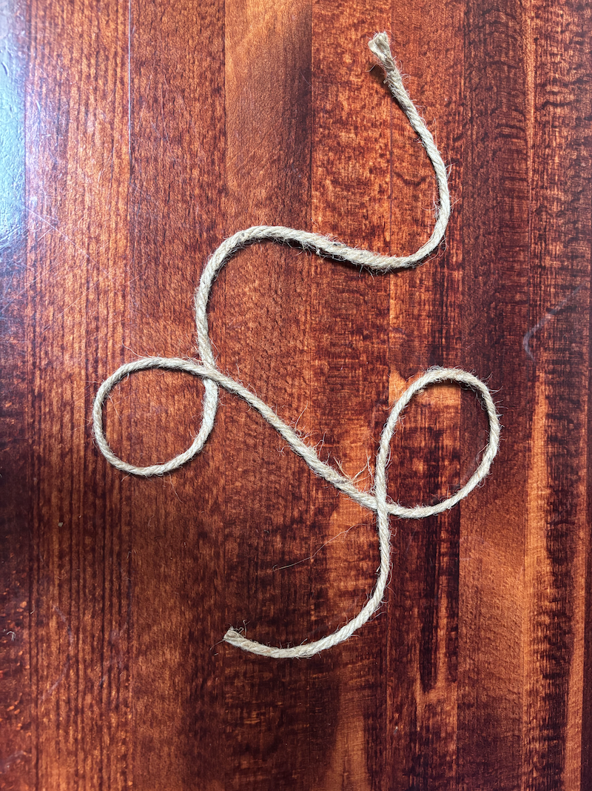
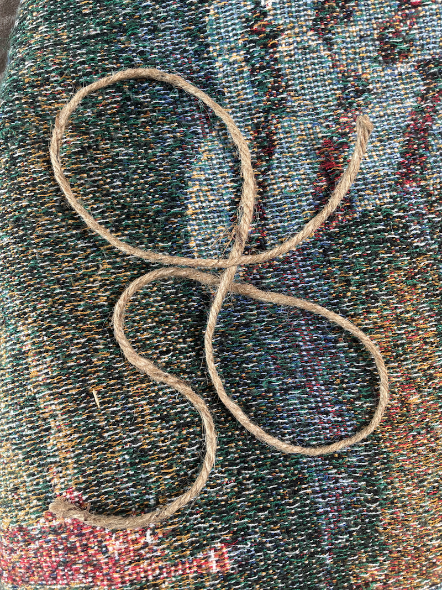
Games between people
Ten years of the same enquiry at different scales. The material is always what happens between two people: the distance between their bodies, the trust between them, or the resources they share. Most of these are cheap and physical and rebuildable by anyone. A few of them needed a building.
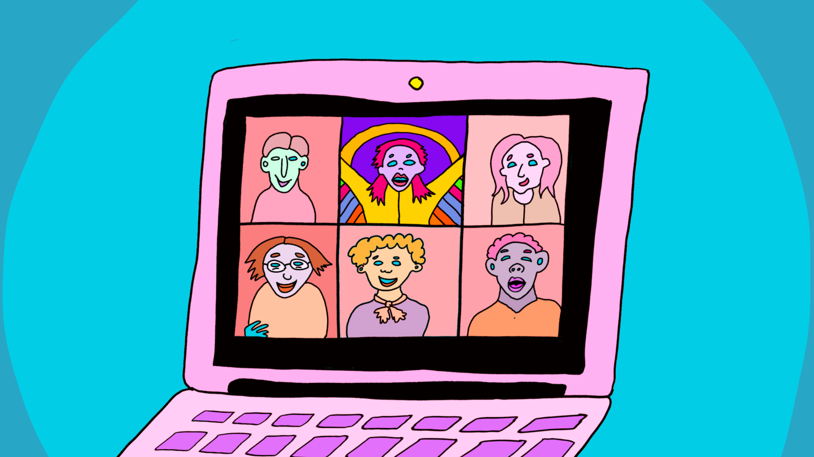

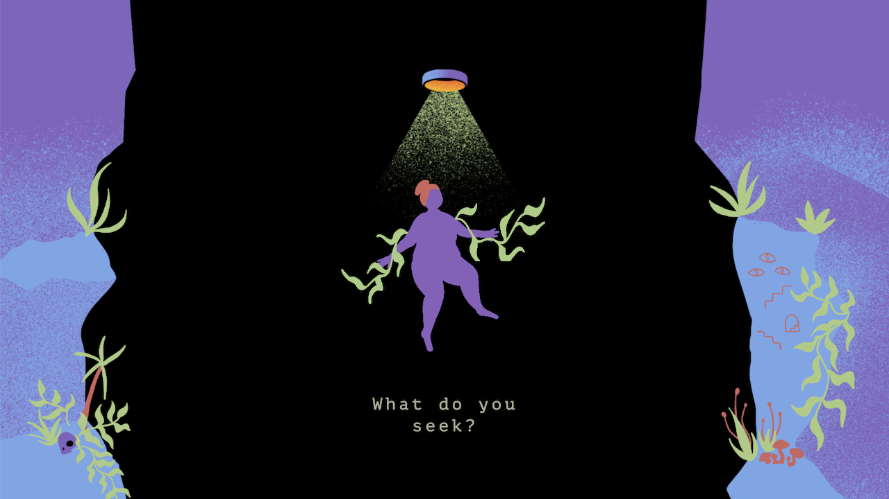
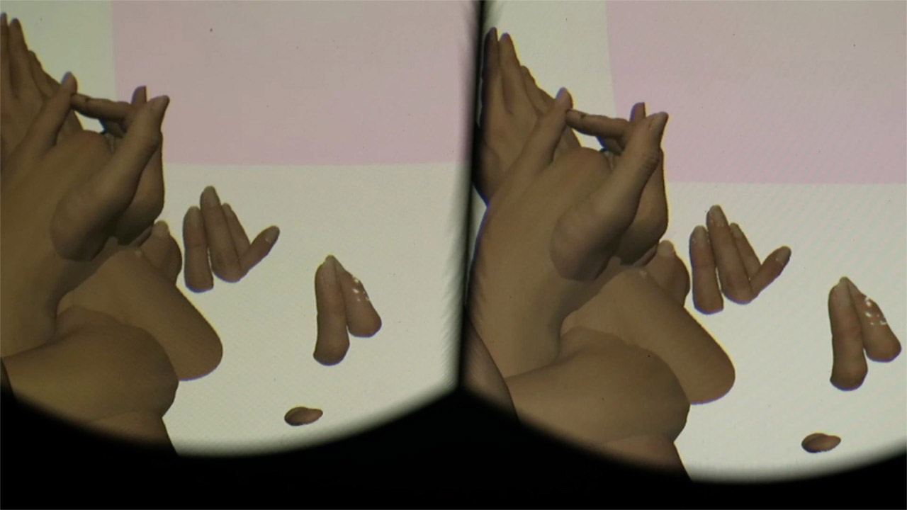
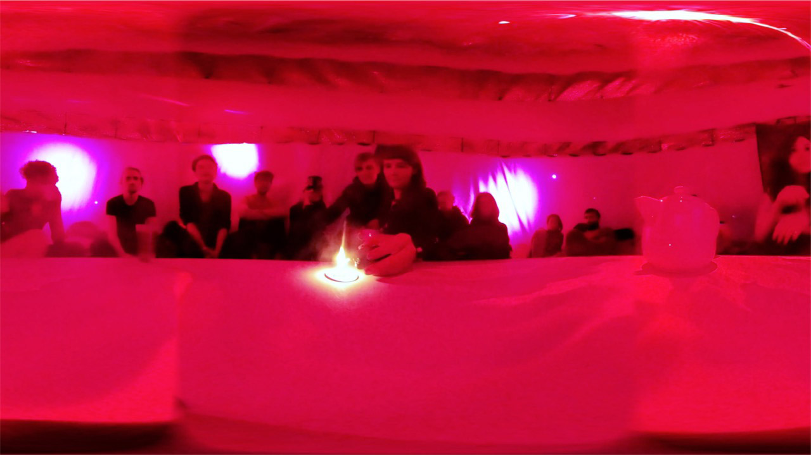


And the same question at a larger scale, where a camera or a city does some of the work.
Closer (2016)
A cooperative installation for two people. To start it you must stand close together, and to explore it you must work together. A camera tracks both players and creates a single shared sphere in the space between them, growing and shrinking with your proximity. Shown at A MAZE. Johannesburg, Chaos Communication Congress, Beta Public London, PLAY Hamburg, CodeMotion Berlin, and elsewhere.
Follow (2019)
A two-person cooperative installation about shared control and the intimacy of opposition, made at the NYU Game Center for the No Quarter exhibition.

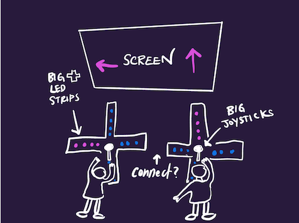
Common (2018)
A city-wide play experience for CAFKA, exploring networks of care, decentralized resource management and community trust across a whole city rather than a single room.
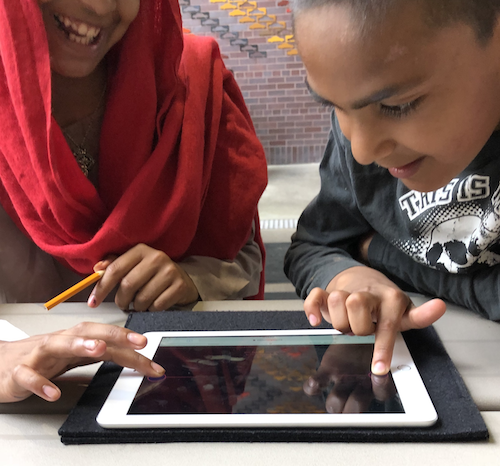
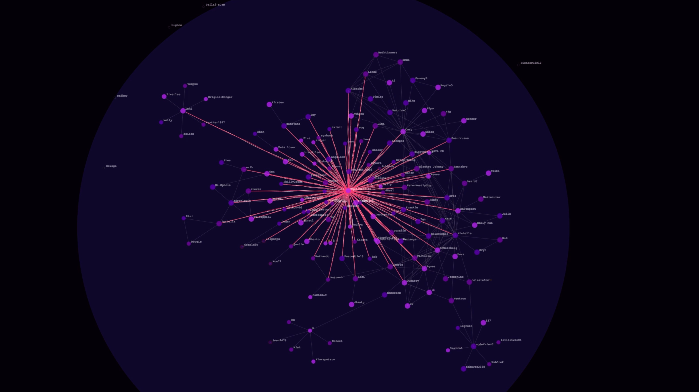
Made with communities
Work where the people who show up are co-authors rather than audience. These are the projects I learn the most from, and the ones I am least able to predict in advance.
If You Don't Like the Game, Change the Rules (2023)
A comic about worker co-operatives, unions and labour in the games industry, drawn from 88 interviews and survey responses, with research support from Michael Iantorno. It exists as an illustrated comic and as a research whitepaper, both in English and French.
I toured it as a workshop, running sessions in Mexico City, Berlin, Taipei, Tokyo, Kyoto, San Francisco, Montreal, Halifax and elsewhere, where participants made their own zines about their relationship to work. People arrived with no zine-making experience and left holding something they had written and drawn themselves. That is close to exactly what I want to do at Le Cube.

Change the Rules
An illustrated story about three friends working in the games industry in Montreal and their exploration of worker-owned co-ops and unions. The story is fiction; the contents are a snapshot of what the people we spoke to actually live.
Finding Our Way (2021–22)
A zine that came out of Tech Tech Tech, a project I co-led with Ada X in Montréal exploring alternatives to the tech giants. It involved deep research, interviews, and a four-part workshop with co-researchers looking for alternatives to corporate tools for office work, social media, online gatherings, portfolios, performances and exhibitions. What the co-researchers found is what the zine is made of. A second zine, Living in the Time of Tech Giants, came out of the same project.
Jeux des Lumières (2026, in progress)
An outdoor game made of light, built around community collaboration, showing in late August. I am developing it together with people who live in the area, including unhoused neighbours working as paid consultants.
Arcade Friend (2019)
A custom arcade cabinet game about labour, play, and the humans behind machine learning, made during my residency at the NYU Game Center with students and faculty there. Emergency Exhibition Care, a mixed reality piece about restrictive office environments and bodily liberation, came out of the same residency and the same way of working.
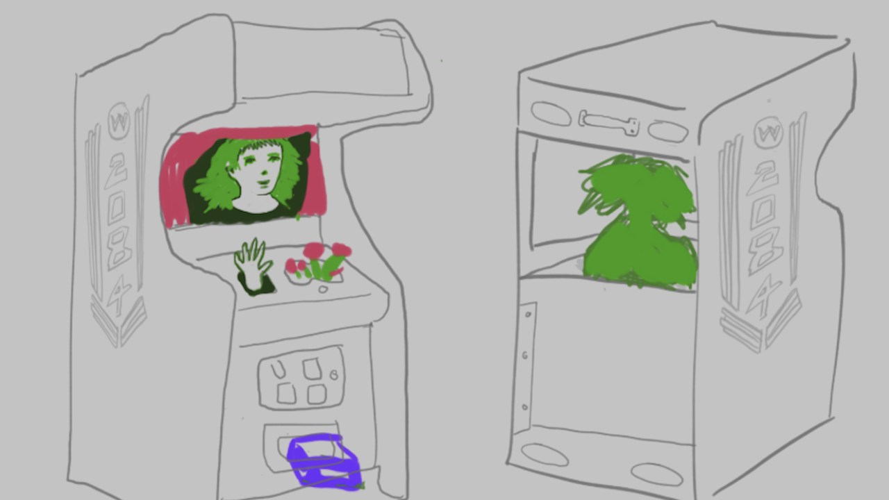
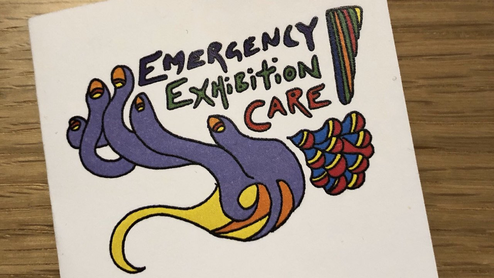
Playtest Your Life (2026)
A game about playtesting each other's lives, shown at Toronto Games Week. People play it on each other rather than on a screen.
Workshops
A Kind of Play
A game-making workshop I have been running for about a decade. The format is prompts, hands, materials, and a room of people making things at the same time. No prior experience, no coding, nothing to install. Participants build small experimental games out of whatever is on the table and write up the rules, so what they made can be played again by somebody who wasn't there.
Berlin (2017), Johannesburg (2017), Dundee (2018), Kraków (2019), Arles (2022), Barcelona (2025), and twice for the Pixelles Game Incubator in Montreal (2020, 2021).
Personal Games, School of Machines, Making & Make-Believe
I taught a hands-on guide to making personal games with Bahiyya Khan and Lorenzo Pilia, twice, in the spring and fall terms of 2020. Everyone who took it made a game.
Making things with your hands
An alt-controller workshop in 2025, building game controllers out of physical materials rather than buying them. I learned to weld at Foulab in 2024, which is roughly where my fabrication skills currently top out.
Zines
For the past five years I have spent an hour of most days on how machines talk to each other, and made zines about it: DNS, the terminal, debugging, Git, and how one computer finds another. Handshakes, peer discovery, routing, latency, packet loss, the keepalive. That vocabulary turns out to describe people about as well as it describes machines.

Meshtastic
Text friends on a network we build together. Sending messages over radio waves, with no wifi, no data plan and no company in the middle.